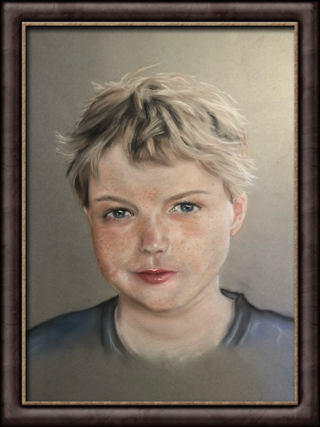
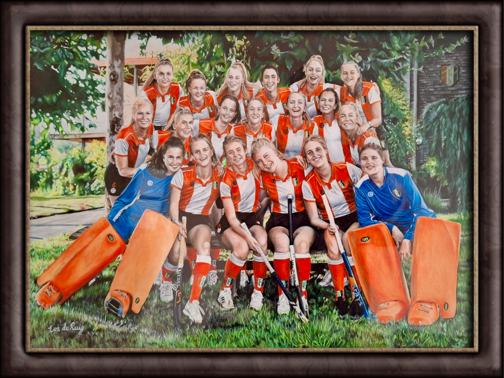
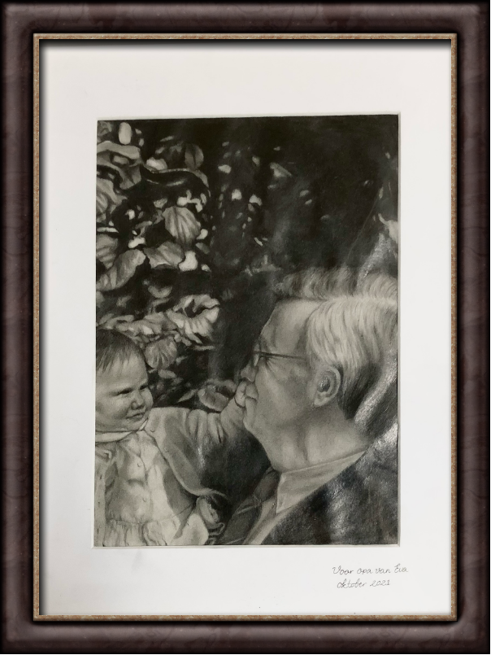
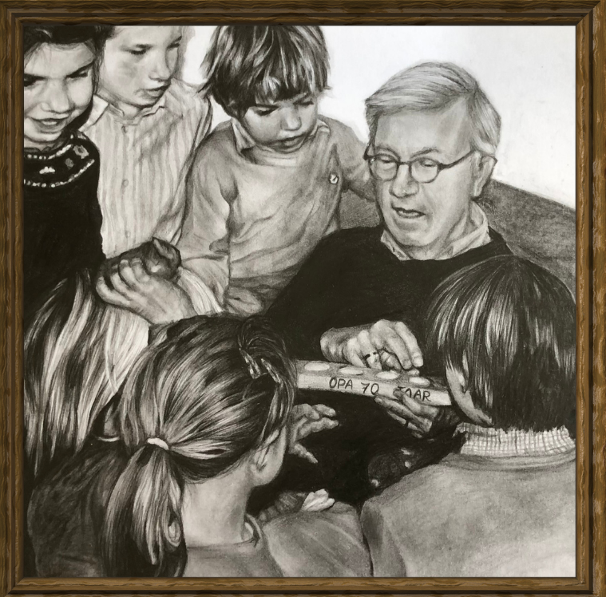
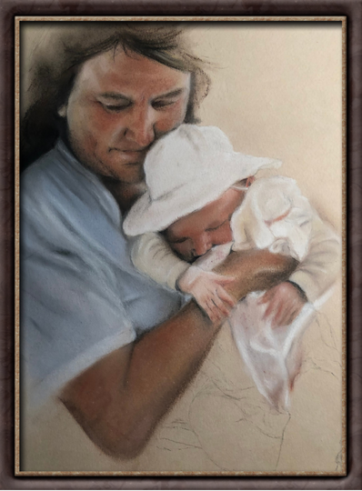

Mijn Collectie
Een selectie van mijn portretten, van kleurpotlood tot pastel. Blader door de collectie en ontdek de details.

Portret Sake de Ruig
Combinatie van pastel en gekleurd potlood
21 × 29,7 cm

Portret Hic Dames 1, 2023
Kleurpotlood op papier
29,7 × 42 cm

Portret Opa en Ik
Grafietpotlood op papier
24 × 32 cm

Portret Opa en Kleinkinderen
Grafietpotlood op papier
12 × 20 cm

Portret Oma en ik
Pastelkrijt op gekleurd papier
12 × 20 cm